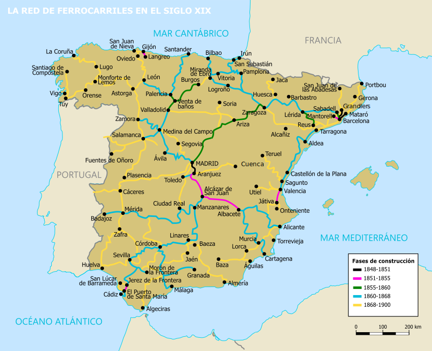
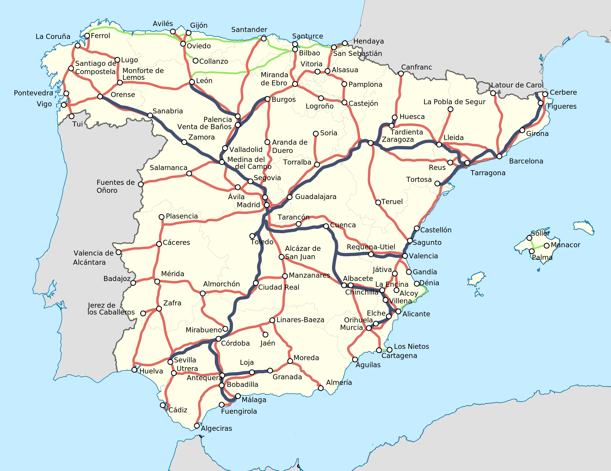

El sistema ferroviario español y el ancho de vía
10 de noviembre de 2025
El ferrocarril en España nació en 1848, con la línea Barcelona–Mataró, dando inicio a una rápida expansión que transformó la movilidad y la economía del país. Desde sus comienzos, el Estado impulsó leyes para atraer inversión privada, lo que permitió el surgimiento de grandes compañías como MZA y Norte, y la creación de una red con estructura radial, centrada en Madrid. España adoptó el llamado ancho ibérico (1.668 mm), distinto al estándar europeo (1.435 mm), por dos motivos principales: estratégico y técnico. Por un lado, se buscaba dificultar una posible invasión por ferrocarril desde Francia; por otro, los ingenieros creían que un mayor ancho ofrecería mayor estabilidad y capacidad para transportar cargas pesadas en terrenos montañosos. Esta decisión, sin embargo, aisló el sistema ferroviario español del resto de Europa durante más de un siglo.
Tras la Guerra Civil, la red quedó devastada, y en 1941 el Estado nacionalizó las compañías privadas, creando RENFE, que unificó la gestión y modernizó progresivamente las infraestructuras. Con el auge del coche y el avión en la segunda mitad del siglo XX, el tren perdió protagonismo, pero la situación cambió radicalmente con la llegada de la Alta Velocidad Española (AVE) en 1992, entre Madrid y Sevilla. Esta nueva red adoptó el ancho internacional, conectándose por primera vez con Europa. Desde entonces, España ha desarrollado uno de los sistemas de alta velocidad más extensos del mundo, con líneas que alcanzan casi todas las grandes ciudades. En el siglo XXI, la creación de ADIF (infraestructuras) y Renfe Operadora (servicios), junto con la liberalización del mercado y la entrada de nuevos operadores como Ouigo e Iryo, han impulsado un sistema ferroviario moderno, competitivo y sostenible, orientado a conectar todo el territorio y a integrarse plenamente en el espacio ferroviario europeo.

El problema con el ancho de via
10 de noviembre de 2025
El ancho de vía ibérico (1.668 mm), adoptado en España a mediados del siglo XIX, fue una decisión que tuvo profundas consecuencias técnicas y económicas. Mientras la mayor parte de Europa optaba por el ancho estándar (1.435 mm), España y Portugal eligieron un ancho mayor por motivos tanto estratégicos como técnicos. Por un lado, se quería dificultar una posible invasión ferroviaria desde Francia en una época de tensiones políticas; por otro, los ingenieros españoles pensaban que una vía más ancha proporcionaría mayor estabilidad y capacidad de carga en un territorio montañoso y con largas distancias. Sin embargo, esta elección se convirtió con el tiempo en un obstáculo para la integración ferroviaria internacional, al impedir la circulación directa de trenes entre España y el resto del continente sin cambiar el ancho de ruedas o transbordar pasajeros y mercancías en la frontera.
Este problema de incompatibilidad de anchos generó sobrecostes, ineficiencias y aislamiento técnico durante más de un siglo. Para mitigarlo, se desarrollaron soluciones como los cambiadores automáticos de ancho, que permiten adaptar los ejes de los trenes entre el ancho ibérico y el internacional, y las vías mixtas, con tres carriles, que permiten circular a trenes de ambos tipos. Sin embargo, la verdadera solución estructural llegó con la creación de la red de alta velocidad (AVE) a partir de 1992, diseñada íntegramente en ancho internacional, lo que permitió conectar España con Francia y el resto de Europa sin barreras técnicas. Hoy, el país convive con dos redes paralelas —una de ancho ibérico y otra internacional—, y los planes de futuro apuntan a una progresiva unificación y conversión hacia el ancho estándar, especialmente en los corredores estratégicos como el Mediterráneo y el Atlántico, para lograr una integración ferroviaria europea plena.
La coexistencia de dos redes ferroviarias con anchos de vía diferentes —ibérico e internacional— plantea aún hoy importantes retos técnicos, económicos y operativos. Mantener ambos sistemas implica duplicar infraestructuras, equipos y costes de mantenimiento, ya que cada ancho requiere su propio material rodante, sistemas de señalización y talleres especializados. Esta dualidad también limita la flexibilidad operativa, pues muchos trenes no pueden circular indistintamente por toda la red, lo que complica la planificación de servicios y la logística del transporte de mercancías. En el ámbito internacional, la transición entre anchos continúa siendo un cuello de botella en las conexiones con Francia y Portugal, ralentizando el tráfico transfronterizo.
Además, la existencia de dos redes ralentiza los proyectos de expansión y modernización, al obligar a decidir entre mantener el ancho ibérico o adaptar las líneas al internacional, una tarea costosa y técnicamente compleja. Esta situación crea una brecha territorial: las regiones conectadas por alta velocidad (ancho internacional) disfrutan de servicios más rápidos y eficientes, mientras que otras zonas siguen dependiendo de líneas antiguas en ancho ibérico. Por ello, uno de los grandes desafíos del sistema ferroviario español en el siglo XXI es lograr una transición ordenada hacia el ancho estándar europeo, garantizando la compatibilidad, la cohesión territorial y la eficiencia del conjunto de la red.

Una dificil solución
10 de noviembre de 2025
Una posible solución al problema del doble ancho de vía en España pasa por una transición progresiva hacia el ancho internacional (1.435 mm), especialmente en los corredores estratégicos de mercancías y pasajeros. Este proceso, que ya se ha iniciado en tramos del Corredor Mediterráneo, permitiría integrar plenamente el sistema ferroviario español con el resto de Europa, facilitando la interoperabilidad y reduciendo costes logísticos. La clave está en priorizar las líneas con mayor tráfico internacional y económico —como las que conectan los puertos del Mediterráneo y el Atlántico con Francia—, combinando la conversión de vía con la instalación de vías mixtas y cambiadores automáticos de ancho para mantener la continuidad del servicio durante la transición.
Paralelamente, sería necesario un plan de inversión coordinado a largo plazo, respaldado por fondos europeos, que modernice infraestructuras, material rodante y señalización para unificar criterios técnicos y mejorar la eficiencia energética. El objetivo no debería ser eliminar de inmediato el ancho ibérico —que sigue siendo funcional en muchas líneas regionales y de cercanías—, sino avanzar hacia una red dual operativa, donde ambas coexistan temporalmente mientras se expande el ancho estándar allí donde sea más rentable y estratégico. A largo plazo, esta convergencia permitiría a España contar con un sistema ferroviario más coherente, competitivo y europeo, capaz de ofrecer servicios más rápidos, sostenibles y conectados con el resto del continente.